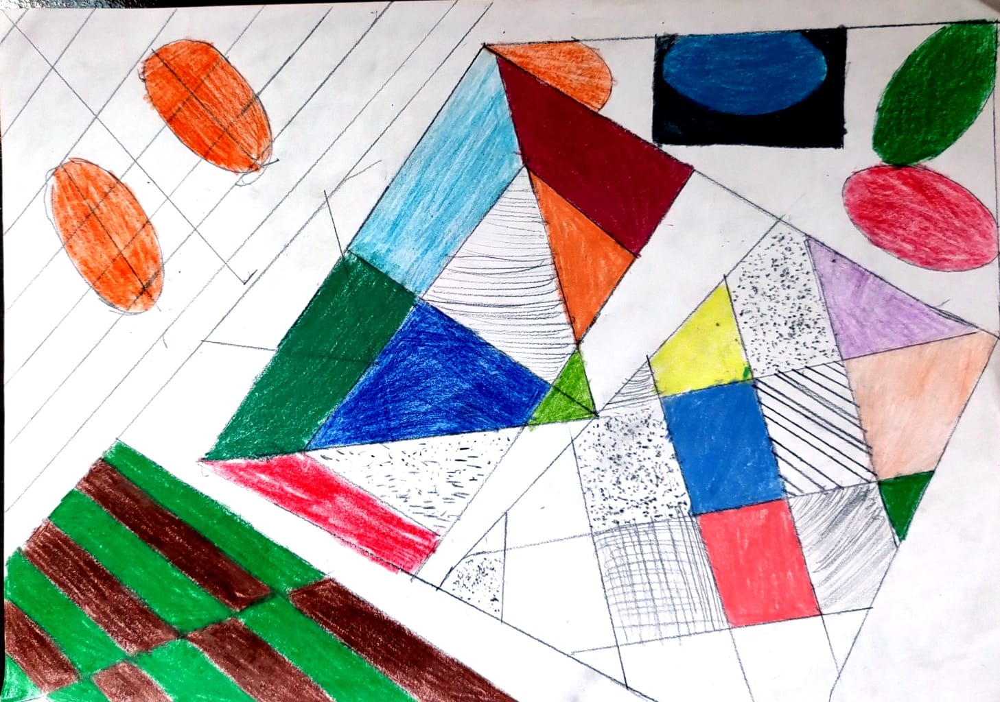

Nesta aula nos vimos sobre as cores complementares e análogas
Cores complementares e análogas
Cores complementares são as que estão opostas no círculo cromático, criando contraste.
Cores análogas são as que estão lado a lado, criando harmonia
15/03/2024
Nesta aula nos vimos sobre as cores complementares e análogas
Cores complementares são as que estão opostas no círculo cromático, criando contraste.
Cores análogas são as que estão lado a lado, criando harmonia
Complementamos a atividade anterior, colocando as cores primárias e suas cores análogas

Fizemos, também, uma obra juntando cores com pontos e linhas.
Tivemos uma atividade para casa, onde deveríamos dar uma crítica sobre o trabalho do colega, descrevendo-o e analizando-o